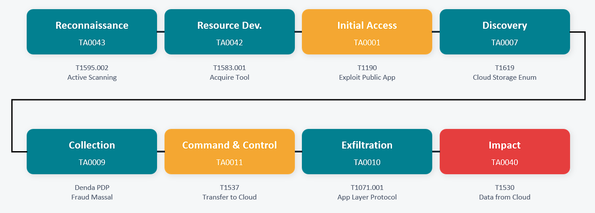

Sebuah perusahaan e-commerce besar di Jakarta menggunakan AWS S3 bucket
untuk menyimpan data pelanggan. Bucket tersebut memiliki
misconfiguration serius:
Block Public Access DISABLED
dan ACL AllUsers:READ aktif akibat kesalahan konfigurasi tim DevOps.
Threat actor mengeksploitasi celah ini menggunakan automated scanning
tools, mengakses bucket tanpa autentikasi, dan melakukan exfiltration
massal 10.000+ record pelanggan — termasuk nama, alamat, dan nomor kartu
kredit — ke server eksternal, yang kemudian dijual di dark web.
Laporan ini memetakan seluruh rantai serangan menggunakan
MITRE ATT&CK Cloud Matrix v14, meliputi IOC, IOA, TTP, dan rekomendasi deteksi/pencegahan per
tactic.
Attack Flow Diagram

Analisis TTP per Tactic
TA0043Reconnaissance
Threat actor menggunakan automated scanning tools untuk menemukan
S3 bucket publik milik perusahaan di region
ap-southeast-1 (Jakarta).
T1595.002 — Active Scanning: Vuln ScanT1596 — Search Open Tech Databases
IOC
IP scanner: 45.33.x.x (Shodan-like range)
DNS query burst ke s3.amazonaws.com
User-Agent mencurigakan (python-scanner)
IOA
Port scanning masif dari 1 IP dalam <60 detik
Pola query otomatis ke endpoint AWS publik
Frekuensi request >500 req/menit
Deteksi / Pencegahan
Aktifkan AWS WAF rate limiting
Monitor dengan Amazon GuardDuty
Blokir IP scanner via NACL
Alert: scan >200 req/menit dari 1 IP
TA0042Resource Development
Threat actor menyiapkan infrastruktur operasi: VPS anonim, tools
exfiltration, dan cloud account untuk menampung data curian.
Pembuatan resource cloud baru tanpa aktivitas bisnis
Download tool hacking dari repo publik
Pembayaran anonim (crypto)
Deteksi / Pencegahan
Threat intel feed: monitor IP Tor exit node
Deteksi download tools via endpoint monitoring
CTI sharing: subscribe ke feed IOC komunitas
TA0001Initial Access
Threat actor mengakses S3 bucket langsung tanpa autentikasi karena
misconfiguration: Block Public Access DISABLED
dan ACL AllUsers:READ aktif.
T1190 — Exploit Public-Facing Application
IOC
Principal: ANONYMOUS di CloudTrail log
ListBuckets dari IP non-whitelisted
Akses ke s3://[bucket]/customers/ tanpa auth
IOA
First-time access dari IP asing ke bucket sensitif
ListObjects API call tanpa sesi autentikasi
Akses jam tidak wajar (02:00–04:00 WIB)
Deteksi / Pencegahan
AWS Config: s3-bucket-public-read-prohibited
Aktifkan S3 Block Public Access di level account
Alert: CloudTrail event Principal = ANONYMOUS
Audit ACL bucket mingguan
TA0007Discovery
Threat actor melakukan enumerasi seluruh objek di bucket untuk
mengidentifikasi data bernilai tinggi sebelum pengambilan massal.
T1619 — Cloud Storage Object DiscoveryT1526 — Cloud Service Discovery
IOC
aws s3 ls s3://[bucket] berulang kali
ListObjects API call dalam jumlah besar
Akses ke /customers, /orders, /payments
IOA
Enumerasi total bucket dalam waktu singkat
Pattern akses sistematik ke semua subfolder
GetBucketAcl + GetBucketPolicy API calls
Deteksi / Pencegahan
CloudTrail: ListObjects >100x dalam 5 menit
AWS Macie: deteksi sensitive data discovery
Amazon Detective untuk pattern analisis
Alert anomali jumlah API calls per session
TA0009Collection
Threat actor mengunduh seluruh file pelanggan secara massal: nama,
alamat, nomor kartu kredit, dan data sensitif lainnya dari 10.000+
record.
T1530 — Data from Cloud Storage ObjectT1213 — Data from Information Repositories
IOC
aws s3 sync s3://[bucket] ./dump/ command
GetObject API burst >1000 req/menit
Transfer data >10 GB dalam 1 sesi
IOA
Download massal seluruh objek sekaligus
Pola wget/curl otomatis ke endpoint S3
Volume transfer jauh di atas baseline
Deteksi / Pencegahan
AWS Macie: klasifikasi & alert PII data access
CloudWatch: GetObject per menit metric
DLP alert: download >1 GB data sensitif / jam
S3 Access Logs untuk forensik detail
TA0011Command & Control
Threat actor membangun channel komunikasi terenkripsi ke server
eksternal (VPS) sebagai staging point sebelum data dijual di dark
web.
T1071.001 — App Layer Protocol: Web (HTTPS)T1573 — Encrypted Channel
IOC
Koneksi HTTPS ke IP VPS anonim (RU/NL)
Sertifikat TLS self-signed pada server C2
Traffic ke domain baru terdaftar <30 hari
IOA
Beaconing reguler ke IP asing setiap N menit
Encrypted channel tidak umum dari environment S3
Outbound ke IP tanpa reputasi bisnis
Deteksi / Pencegahan
DNS filtering: blokir domain baru/suspicious
SIEM: korelasi S3 access + outbound HTTPS asing
Threat intel: check IP reputasi secara otomatis
VPC Flow Logs: monitor koneksi outbound
TA0010Exfiltration
Threat actor mentransfer data yang sudah dikumpulkan ke cloud
storage eksternal miliknya, dikompresi terlebih dahulu untuk
menghindari deteksi volume transfer.
T1537 — Transfer Data to Cloud AccountT1030 — Data Transfer Size Limits
IOC
Upload ke S3 bucket eksternal di akun berbeda
File .zip / .tar.gz tidak biasa dari server
Aktivitas PutObject ke bucket tidak dikenal
IOA
Outbound transfer >10 GB ke 1 IP tujuan
Kompresi massal sebelum transfer
Aktivitas upload di luar jam kerja
Deteksi / Pencegahan
AWS VPC Flow Logs: alert outbound >5 GB
Network DLP: inspect transfer data PII
SIEM: S3 access + large outbound = alert
Laporan ke BSSN & OJK dalam 14 hari (UU PDP)
TA0040Impact
10.000+ data pelanggan bocor dan dijual di dark web. Perusahaan
menghadapi denda UU PDP, fraud kartu kredit massal, hilang
kepercayaan, dan penurunan penjualan 20%.
T1565.001 — Stored Data ManipulationT1486 — Data Encrypted / Sold for Impact
IOC
Data pelanggan muncul di BreachForums
Hash dump file cocok dengan data internal
Laporan fraud CC massal dari bank penerbit
IOA
Volume complaint fraud pelanggan melonjak
Mention nama perusahaan di dark web monitoring
Notifikasi dari threat intel (HIBP/MISP)
Deteksi / Pencegahan
Daftarkan domain ke Have I Been Pwned (HIBP)
Pasang dark web monitoring (Recorded Future)
Aktifkan fraud alert bersama bank issuer CC
Laporan ke BSSN & OJK max 14 hari (UU PDP Ps.46)
Rekomendasi Mitigasi Utama
1Aktifkan S3 Block Public Access di level account —
bukan hanya per bucket — agar tidak bisa di-override oleh
konfigurasi bucket individual.
2Implementasi AWS Config rules otomatis (s3-bucket-public-read-prohibited) untuk audit kontinyu dan auto-remediation bucket yang tiba-tiba
public.
3Pasang AWS Macie untuk klasifikasi data sensitif
(PII, kartu kredit) dan trigger alert otomatis saat data tersebut
diakses secara anomali.
4Enkripsi S3 wajib menggunakan SSE-KMS untuk semua
bucket berisi data pelanggan — sehingga data tidak bisa dibaca
meskipun berhasil didownload.
5Lakukan
penetration testing dan audit konfigurasi cloud
secara berkala (minimal bulanan) mencakup semua bucket, IAM policy,
dan VPC rules.
6Buat Incident Response Plan sesuai UU PDP —
termasuk prosedur notifikasi ke BSSN dan OJK dalam maksimal 14 hari
sejak pelanggaran terdeteksi (Pasal 46).